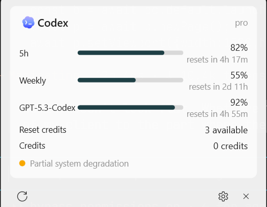
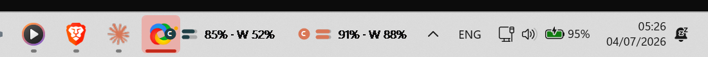

The glance
See a compact provider signal, usage percentage, or reset information from your taskbar, depending on the data available and the space Windows provides.
Open-source Windows 11 taskbar companion
CodexWinBar keeps the limits each connected service exposes—usage windows, reset times, and credits or spend—in a compact Windows 11 taskbar overlay. Click for detail, pace signals, account context, and service status.
Connect Codex, Claude, GitHub Copilot, OpenRouter, OpenAI Admin, z.ai, or the experimental Cursor integration.


Seven shipping integrations
A fresh install connects nothing. Enable only the services you want CodexWinBar to check; connection methods and available fields differ by provider.
Browser OAuth in CodexWinBar
ChatGPT Codex usage, credits, and reset-credit availability when returned.
Browser OAuth in CodexWinBar
Session, weekly, model-specific, routines, and extra-usage fields when returned.
GitHub device flow
Copilot quota snapshots from the connected GitHub account.
API key
Credit balance and per-key limits when available.
Admin API key
Organization cost reporting for the last 30 days and today.
API key
Coding-plan quota data exposed by z.ai.
Session cookie
Endpoint behavior has not yet been live-verified with a real Windows session.
Provider names and logos are trademarks of their respective owners. Integration does not imply endorsement or partnership.
The workflow
Stay aware without turning quota checking into another dashboard habit.
See a compact provider signal, usage percentage, or reset information from your taskbar, depending on the data available and the space Windows provides.
Open a native flyout for detailed usage windows, reset countdowns, credits or spend, account context, and service incidents when those fields are available.
Turn on quota-threshold notifications and, optionally, pace projections to spot a limit you may exhaust before its next reset.
WPF and Win32—not a browser shell. The tracked overlay positions itself opposite the clock, adapts through Full, Medium, and Compact layouts, and hides for auto-hidden taskbars or fullscreen displays.
From install to glance
The self-contained x64 release needs no separate .NET runtime and installs per-user without administrator access.
Use browser sign-in, GitHub device flow, or enter the required API key or cookie for the provider you choose.
Choose a refresh interval, open the flyout for detail, and enable threshold alerts if you want an earlier warning.
CodexWinBar can only display the fields each provider makes available, and provider endpoints can change.
Privacy without vague absolutes
No CodexWinBar account. No CodexWinBar backend. No analytics or telemetry.
A fresh install connects nothing. Codex and Claude OAuth credentials are protected for your Windows account with DPAPI. API keys, the Copilot token, and Cursor cookies are stored in the CodexBar-compatible local config file, which CodexWinBar restricts to the current Windows user when Windows permits it.
The app contacts the services you connect, optional provider status services, and GitHub Releases for update checks. Fetched usage is rendered locally and is not forwarded to a CodexWinBar service.
Windows 11 x64
The recommended installer is per-user and needs no administrator access. Review the short script before running it if you prefer to verify every step.
irm https://codexwinbar.webivize.com | iex
The script resolves the latest release, refuses unexpected download hosts, and compares SHA-256 when GitHub publishes a digest. It then installs for the current user.
Inspect install.ps1 before running itCurrently unsigned. A browser download can show an Unknown publisher warning. Review the repository and release before choosing “More info → Run anyway.”
Download latest Setup.exe View the latest releaseBuilding requires the .NET 9 SDK. Published installers already include the required runtime.
View build instructions
The winget submission is awaiting Microsoft review. Do not use it as an installation path until the
public catalog resolves ItayCohen.CodexWinBar.
Installed copies check GitHub for updates at startup and every three hours. When an update is available, the flyout lets you choose when to download and restart.
Open from installer to provider parser
CodexWinBar is a native C#/.NET 9 Windows application built with WPF and Win32. The source, provider integrations, installer script, and tests are public under the MIT license.
CodexWinBar builds on the product concept and provider-protocol research of CodexBar by Peter Steinberger. The Windows port reimplements the experience in C#/.NET 9 with WPF and Win32 while retaining compatible config paths and schema handling. OAuth sessions and unimplemented providers do not sync.
Windows port by Itay Cohen. Both projects are MIT licensed.
Keep the next reset in sight